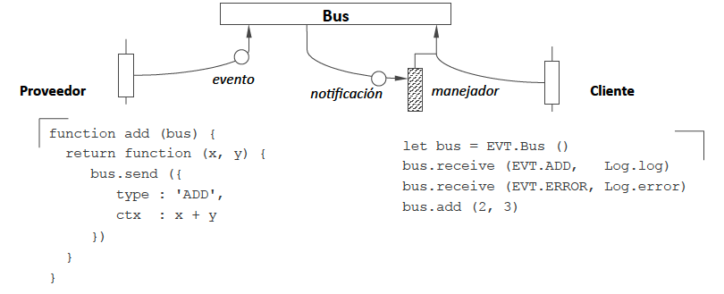
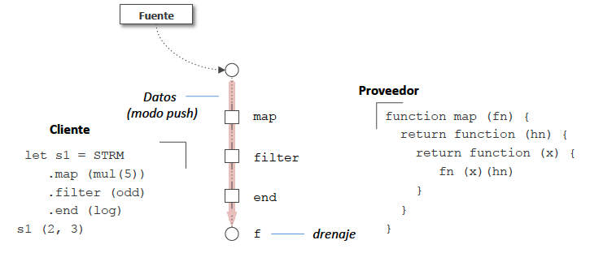

Programación asíncrona¶
Eventos¶
Las operaciones disparan eventos de diferentes tipos, que son escuchados por los manejadores (listeners) de eventos, que los clientes han registrado en un bus de eventos.

figura por Javier Vélez Reyes, Programación asíncrona en JavaScript
Ventajas:
- Aplicaciones más interactivas
- Mejor uso de los recursos
Estrategias:
Estrategias para escribir aplicaciones basadas en eventos:
- Máquinas de estados finitos (FSM)
- Implementaciones del patrón Observer
- Sistemas de Publicación/suscripción (PubSub)
- Streams y programación reactiva
Máquinas de estados¶
- Una FSM es una especificación de cómo manejar eventos.
- Lista de estados + estado actual
- Para cada estado, transiciones a otros estados significativos
- Las transiciones vienen definidas por eventos
- Cada transición delimita una acción con la respuesta a cada evento
Patrón Observer¶
- Observable: fuente de eventos
- Observadores: lista de clientes interesados en los eventos
Los observadores se registran ellos mismos en cada observable \Rightarrow produce acoplamiento.
Las acciones de callback son gestionadas por los observables, que suele mantener una lista interna de observadores \Rightarrow produce cuellos de botella.
PubSub¶
- Los sistemas de PubSub son Observers generalizados.
- Los publicadores y los suscriptores se conectan por canales
- Suelen implementarse en bibliotecas aparte de mensajería o Message Queues (MQ)
- Cada canal tiene un nombre, empleado por publicadores y sucriptores para desacoplarse entre sí
- La comunicación puede hacerse asíncrona
Ejemplos de bibliotecas de PubSub/MQ:
- RabbitMQ
- ZeroMQ
- NATS
- Apache ActiveMQ
- etc.
Protocolos de MQ:
- AMQP
- MQTT
- STOMP
- etc.
¿Cómo crear sistemas que respondan a combinaciones de eventos? Hay que añadir la dimensión del tiempo al procesamiento de los eventos
Los eventos deben disparar reacciones en el código, pero no es fácil conectar las acciones con los eventos. Para facilitarlo, se usan streams...
Streams y Rx¶
Los datos fluyen por pipelines y se consumen siguiendo modelos push o pull

figura por Javier Vélez Reyes, Programación asíncrona en JavaScript
Un stream trata a los eventos como colleciones de datos, de forma que pueden ser tratados como cualquier otra colección: manipularlos, combinarlos, filtrarlos, etc.
Además, los streams pueden ser asíncronos.
Programación reactiva (Rx)
Es un paradigma, parte de la programación asíncrona: la disponibilidad de información nueva conduce la lógica del programa, en vez de dejar que el control de flujo sea dirigido por un hilo de ejecución.
- Modelo de Observables: tratar a los streams de eventos asíncronos con las mismas operaciones sencillas de composición que se usan para las colecciones de datos.
- Bibliotecas de programación Rx: reactivex.io
- Principios
Observables
Los Observables se pueden:
- Crear:
Create,Defer,From,Interval,Just,Range,Repeat,Start,Timer - Transformar:
Buffer,FlatMap,GroupBy,Map,Scan,Window - Filtrar:
Debounce,Distinct,ElementAt,Filter,IgnoreElements,Last,Sample,Skip,SkipLast,Take,TakeLast - Combinar:
And/Then/When,CombineLatest,Join,Merge,StartWith,Switch,Zip - Etc... Operadores Rx
LECTURA recomendada: The introduction to Reactive Programming you've been missing (by @andrestaltz)
¿Qué añade un Observable al patrón Observer? Añade a un Observer asíncrono la semántica de un Iterable síncrono:
onCompleted(): para que el publicador avise al suscriptor que no hay más datos disponibles en el stream (los Iterables simplemente acaban su iteración)onError(): para que el productor avise al suscriptor que ha ocurrido un error (en su lugar, los Iterables elevan excepciones)
Ejemplos de frameworks de streaming:
- Apache Kafka
- NATS Streaming
- Spark Streaming
- Amazon Kinesis
- Apache Pulsar
Lectura recomendada
Thomas & Hunt. The Pragmatic Programmer, 2nd edition, 2022. Capítulo: Transforming Programming